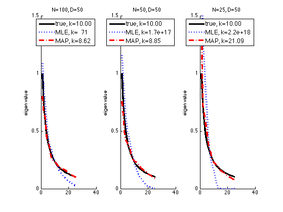

covariance matrix shrinkage Demo
setSeed(0);
d = 50;
condnumber = 10; a = randn(d,1);
[Sigma] = covcond(condnumber,a);
evalsTrue = sort(eig(Sigma),'descend');
mu = zeros(1,d);
f = [2 1 1/2];
condNumMLE = zeros(1,3); condNumShrink = zeros(1,3);
figure;
for i=1:length(f)
n = f(i)*d;
X = gaussSample(mu, Sigma, n);
Smle = cov(X);
evalsMle = sort(eig(Smle),'descend');
lambda = 0.9;
Sshrink = lambda*diag(diag(Smle)) + (1-lambda)*Smle;
evalsShrink = sort(eig(Sshrink),'descend');
subplot(1,3,i)
hold on
ndx = 1:2:d;
if 1
plot(evalsTrue(ndx), 'k-', 'linewidth', 3);
plot(evalsMle(ndx), 'b:', 'linewidth', 3);
plot(evalsShrink(ndx), 'r-.', 'linewidth', 3);
ylabel('eigenvalue')
fname = sprintf('covshrinkDemoN%d', n);
else
plot(log(evalsTrue(ndx)), 'k-o', 'linewidth', 2, 'markersize', 8);
z=log(evalsMle(ndx));
for ii=1:length(z), if ~isreal(z(ii)), z(ii)=nan; end; end
plot(z, 'b-x', 'linewidth', 2, 'markersize', 12);
plot(log(evalsShrink(ndx)), 'r:s', 'linewidth', 2, 'markersize', 8);
ylabel('log(eigenvalue)')
fname = sprintf('covshrinkDemoLogN%d', n);
end
legendStr{1} = sprintf('true, k=%4.2f', cond(Sigma));
legendStr{2} = sprintf('MLE, k=%4.2g', cond(Smle));
legendStr{3} = sprintf('MAP, k=%4.2f', cond(Sshrink));
legend(legendStr, 'fontsize', 12)
title(sprintf('N=%d, D=%d', n, d))
set(gca, 'ylim', [0 1.5])
end
printPmtkFigure('covshrinkDemo');
